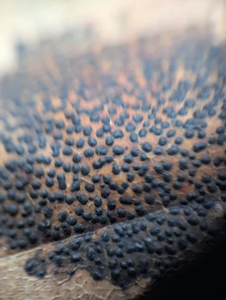
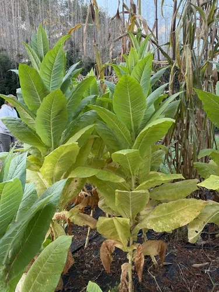
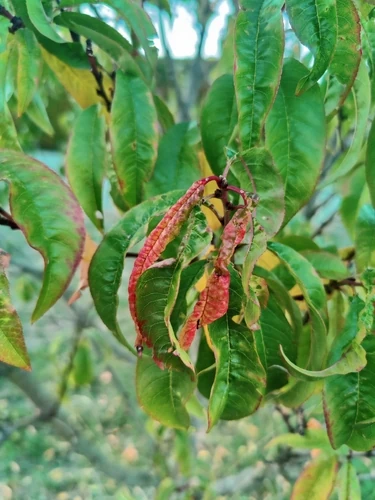
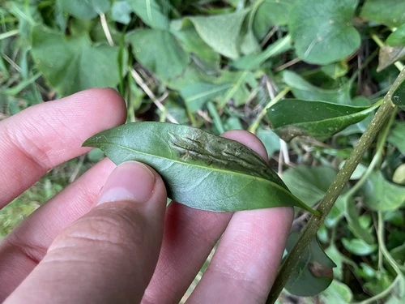
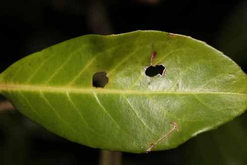

叶的问题
 叶片上出现褐色的斑块
叶片上出现褐色的斑块
 褐斑带有黄色边缘
褐斑带有黄色边缘
 叶片上出现细密褐点
叶片上出现细密褐点
 叶片从叶尖开始变褐干枯
叶片从叶尖开始变褐干枯
 叶片上出现黑色斑块
叶片上出现黑色斑块

细密的黑点 灰斑带深色边缘
灰斑带深色边缘
 没有扩大的浅色斑纹
没有扩大的浅色斑纹
 浅色弯曲的潜道
浅色弯曲的潜道
 沿叶脉边界的黄色斑块
沿叶脉边界的黄色斑块
 散在的黄白色斑点
散在的黄白色斑点
 叶面密布黄白色针点
叶面密布黄白色针点
 枝叶上有可剥离的小壳
枝叶上有可剥离的小壳
 干土中的下叶发黄并萎蔫
干土中的下叶发黄并萎蔫

湿土中的下叶成片发黄 少量老叶逐渐发黄
少量老叶逐渐发黄
 多处叶片同时变黄
多处叶片同时变黄
 叶肉黄而叶脉绿
叶肉黄而叶脉绿
 叶脉变黄，叶肉仍绿
叶脉变黄，叶肉仍绿
 茎细长，叶色变浅
茎细长，叶色变浅
 叶片发软腐烂
叶片发软腐烂
 叶缘发黑变软
叶缘发黑变软
 少量下叶干枯
少量下叶干枯
 叶形不规则
叶形不规则
 叶片有突起或瘿瘤
叶片有突起或瘿瘤
 叶片边缘卷曲
叶片边缘卷曲

新叶扭曲，局部发红
叶片卷成筒状 短足、身体分节的幼虫
短足、身体分节的幼虫
 叶面有椭圆形甲虫和咬孔
叶面有椭圆形甲虫和咬孔
 带长吻的甲虫和叶缘缺刻
带长吻的甲虫和叶缘缺刻

褐斑中心脱落成孔 茎萎蔫
茎萎蔫
 可擦去的白色粉层
可擦去的白色粉层
 叶腋有白色棉絮状小虫
叶腋有白色棉絮状小虫
 叶面有可擦去的黑层
叶面有可擦去的黑层
 红褐色斑点与粉状小疱
红褐色斑点与粉状小疱
 茎上出现灰褐色霉层
茎上出现灰褐色霉层